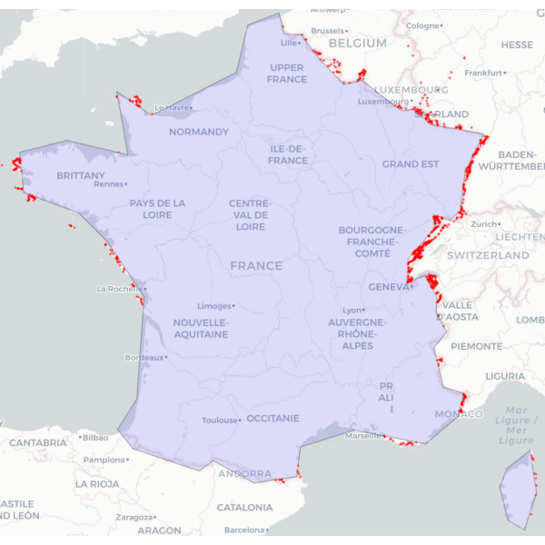
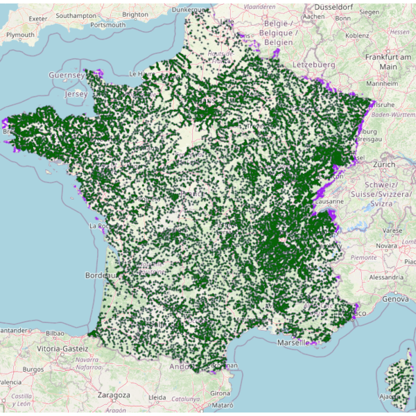
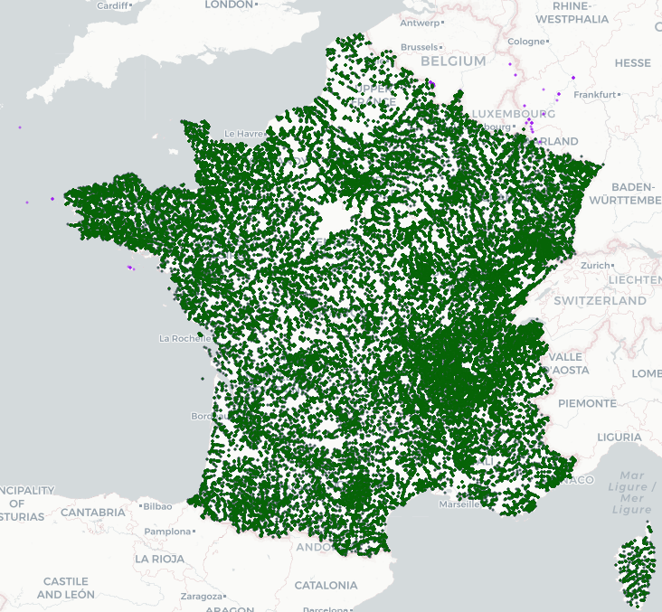
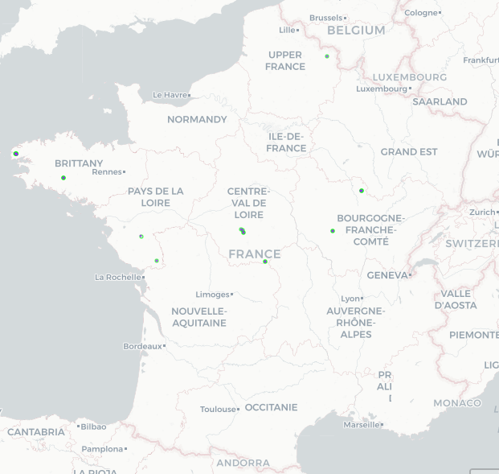
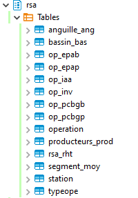
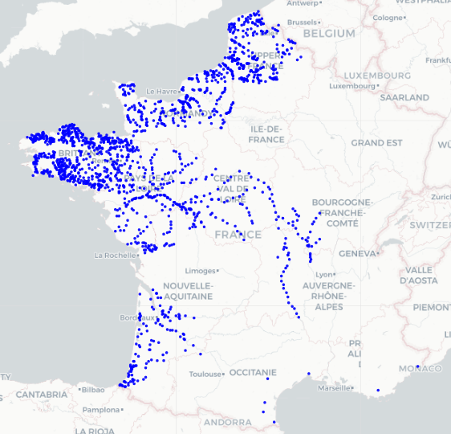

2 Préparation des données
2.1 ASPE
La base de données ASPE contient un ensemble de données détaillant les opérations de pêches, les stations et points de prélèvements, les effectifs pêchés. Toutes ces informations ne sont pas nécessaires pour EDA.
L’ensemble des étapes de préparations sont effectués dans le fichier aspe_import.R. L’objectif va être d’insérer dans 4 tables “tampon” des données issues de ASPE. Puis ces 4 tables seront utilisées afin d’alimenter les tables finales de la base EDA.
2.1.1 Connexion à la base EDA et import des données brutes
Après chargement des librairies R, la connexion à la base de données EDA (sur laquelle se base le modèle) est initialisée. Les paramètres de connexion sont initialisées grâce au fichier common/init.r. A cette étape, les différents identifiants de connexion sont chargées depuis le fichier EDAload23.xml (cas où rivernetwork== "RIOS"). Dans le cas de l’import de données ASPE vers la base EDA, les paramètres de connexion utilisés sont repérés par les balises lienODBCrios, uidrios et pwdrios.
options("width")
con = dbConnect(Postgres(),
dbname=baseODBCrios[1],
host="localhost",
port=5432,
user=baseODBCrios[2],
password=baseODBCrios[3])Les données brutes issues du dump en date du 25/06/2023 sont ensuite chargées.
2.1.2 Stations en France métropolitaine
A cette étape du processus, un ensemble d’opérations de pêches sont présentes dans les différentes tables ASPE mais certaines concernent des stations se situant dans des pays frontaliers (Suisse, Allemagne, …). Il convient de ne conserver que les stations françaises.
La première étape va être de charger toutes les stations présentes dans la table station et de ne conserver que celles dont la position est codifiée sur le système de coordonnées Lambert-93_France (code EPSG 2154) puis de transformer ces coordonnées sur un référentiel européen LAEA Europe (code EPSG 3035).
station_aspe <- station %>%
left_join(y = ref_type_projection,
by = c("sta_typ_id" = "typ_id")) %>%
# filter data from metropolitan France only
# (no overseas french territories).
filter(typ_code_epsg==2154) %>%
#Spatial join will be performed
# to filter wrong coordinates later on
filter(sta_coordonnees_x > 0)
# reproject coordinates in European system
# from 2154_Lambert-93_France to 3035_LAEA Europe
coords <- aspe::geo_convertir_coords_df(df = station_aspe,
var_x = sta_coordonnees_x,
var_y = sta_coordonnees_y,
var_id = "sta_id",
var_crs_initial = "typ_code_epsg",
crs_sortie = 3035)
# add reprojected coordinates to station_aspe table
station_aspe <- station_aspe %>%
left_join(y = coords) %>%
# dplyr::select(-(sta_geometrie)) %>%
#discard unused column
dplyr::select(-(sta_geometrie),-(starts_with("typ"))) %>%
mutate(typ_code_epsg=3035)
# remove all column starting with "typ"
station_aspe <- station_aspe[, !grepl("typ",colnames(station_aspe))] La liste de données station_aspe est ensuite transformée en objet de type spatial vector data (sf) afin de pouvoir effectuer des opérations de manipulation cartographique. Nous allons notamment utiliser un un polygone “France” récupéré grâce au package R rnaturalearth qui sera croisé (intersection carto) avec l’objet sf des stations ASPE.
Une précédente version de cette intersection provoquait la suppression de plus de 1000 stations (sur 33000 environ). Après investigation, ce filtre trop important provenait d’un polygone France trop grossier, notamment près des frontières (cf sur la figure ci-dessous).
station_aspe_sf <- st_as_sf(station_aspe, coords=c("X","Y"),crs=3035)
# Spatial filtering
#Get France polygons, projected in 3035_LAEA Europe
france_polygone <- rnaturalearth::ne_countries(type = "countries",
country = "france",
returnclass = "sf") %>%
# keeps only name of country('France") and its geometry
select(name_sort) %>%
# reproject in the same crs as stations
st_transform(3035)
#to insure that all coordinate are correcly within France territory
#intersect of stations dataset with france polygons
station_aspe_france <- sf::st_intersection(
# filter stations in France
station_aspe_sf, france_polygone) %>%
# remove extra column from france polygone 31734
select(-name_sort)
#deleted stations
station_aspe_france_diff <- sf::st_difference(
station_aspe_sf, france_polygone)
#visualisation
mapview::mapview(france_polygone,
alpha.regions = 0.2,
aplha = 1,legend=FALSE) +
mapview::mapview(station_aspe_france_diff,
color="red",alpha.regions = 0.1,
aplha = 0.1,legend=FALSE,cex =1)
Pour améliorer cette étape de filtre, le polygone “France” a été bufferisé de 20km et une nouvelle étape d’intersection a été réalisée. Le résultat est la suppression d’uniquement 55 stations qui sont pour la plupart hors France métropolitaine. Il reste toutefois quelques stations (<10) à la marge (sur les îles bretonnes et au NE) et qui sont supprimées par ce filtre. La figure ci-dessous présente en les stations récupérées avec la version v1 et en les stations supplémentaires récupérées grâce au polygone France bufferisé.
france_polygone_buff <- st_buffer(france_polygone,dist=20000)
#visualisation nouveau buffer vs ancien
mapview::mapview(france_polygone,
alpha.regions = 0.1,
aplha = 0.1,legend=FALSE) +
mapview::mapview(france_polygone_buff,
alpha.regions = 0.1,
aplha = 0.4,legend=FALSE)
#intersect France with buffer with list of stations
station_aspe_france_buff <- sf::st_intersection(
station_aspe_sf, france_polygone_buff) %>%
select(-name_sort)
#Lost stations
station_aspe_france_buff_diff <- sf::st_difference(
station_aspe_sf, france_polygone_buff)
#Plot v1 vs v2
mapview::mapview(station_aspe_france_buff,
color="purple",alpha.regions = 0,
aplha = 0.3,legend=FALSE,cex =1) +
mapview::mapview(station_aspe_france, color="darkgreen",
alpha.regions = 0, aplha = 0.1,
legend=FALSE,cex =1)
La dernière étape est l’ajout de ces stations dans la base EDA.
2.1.3 Points de prélèvements
Dans ASPE, les opérations de pêche sont associées à des couples points de prélèvements/stations. Un point de prélèvement est associé à une station. Lors de l’importation des données pour le run du modèle EDA, les données des points de prélèvements ne sont pas nécessaires dans l’absolu. Toutefois, il existe dans ASPE des opérations qui sont associées à des points de prélèvements mais sans station. Nous allons voir ci-dessous ce cas particulier (cf Opérations ) après avoir présenté le cas général.
Dans un premier temps, les points de prélèvement français sont récupérés puis leur coordonnées dans le système de coordonnées 3035 est calculé. Au 08/09, une correction a été apportée pour mieux filtrer les points de prélèvements. En effet, dans ASPE il existe des POP dont les coordonnées sont codées sur Lambert II Etendu et d’autres sur Lambert 93. Les données DOM-TOM sont ignorées.
point_prelevement_aspe <- point_prelevement %>%
left_join(y = ref_type_projection,
by = c("pop_typ_id" = "typ_id")) %>%
filter(!typ_code_epsg %in% c(2975,2989,2972,4471,4467) )
#limit points to metropolitan France. Filtering DOM-TOM Espg
coords <- geo_convertir_coords_df(df = point_prelevement_aspe,
var_x = pop_coordonnees_x,
var_y = pop_coordonnees_y,
var_id = "pop_id",
var_crs_initial = "typ_code_epsg",
crs_sortie = 3035) Ensuite on récupère les données qui nous intéressent. En date du 21/08/2023, il existe 140160 points de prélèvements. Mais parmi ces points, certains possèdent des coordonnées erronées et il paraît difficile de les corriger. Ces points sont donc supprimés en suivant le même principe que pour les stations (intersection avec la carte de France métropolitaine).
point_prelevement_aspe <- point_prelevement_aspe %>%
left_join(y = coords, by= "pop_id") %>%
dplyr::select(-c(pop_distance_mer,
pop_distance_maree_dynamique,
pop_fog_id_cerema,
pop_ocs_id,
pop_zoh_id,
pop_reh_id_cerema,
pop_cap_id,
pop_acc_id,
pop_unh_id,
pop_distance_source,
pop_altitude,
pop_pente_ign_cours_eau,
pop_surface_bassin_versant_amont,
pop_temperature_moyenne_janvier,
pop_temperature_moyenne_juillet,
pop_uti_id,
pop_bas_id,
typ_code_sandre,
typ_libelle_sandre,
typ_libelle,
typ_ordre_affichage
))%>%
mutate(typ_code_epsg=3035)
point_prelevement_aspe_sf <- st_as_sf(point_prelevement_aspe, coords=c("X","Y"),crs=3035)
nrow(point_prelevement_aspe) #115355
#120427 au 21/08
#140160 au 08/09
# Just checking that everything works fine
#several points are outside french territory
mapview::mapview(point_prelevement_aspe_sf, color = "green")
#we are going to filter pop with a similar method used for stations
pop_aspe_france_buff <- sf::st_intersection( # filter in France
point_prelevement_aspe_sf, france_polygone_buff)
#139680 au 08/09Au final, 139680 points de prélèvements sont conservés. Le résultat est visible sur la carte ci-dessous (en vert les points conservés, en violet ceux qui sont supprimés). Certains point supprimés sont géolocalisés dans l’océan arctique, l’océan indien et en Afrique. Ils ne sont pas visibles sur cette carte.

La dernière étape est l’ajout de ces points de prélèvements dans la base EDA.
station_aspe_france <- station_aspe_france_buff
# Write prelevement table in the database
DBI::dbExecute(con, "DROP TABLE if exists france.point_prelevement_aspe;")
DBI::dbWriteTable(con, "point_prelevement_aspe", pop_aspe_france_buff)
DBI::dbExecute(con, "ALTER TABLE point_prelevement_aspe set schema france")2.1.4 Opérations
A cet étape on récupère l’ensemble des opérations qui sont stockées dans ASPE. Elles sont au nombre de 45589 (au 21/08/23). Une opération sera caractérisée par des mesures physicochimiques sur le point de prélèvement et des informations techniques sur l’opération de pêche.
operation_aspe <-
point_prelevement %>%
left_join(operation, by=c("pop_id"="ope_pop_id")) %>%
left_join(operation_description_peche, by = c("ope_id" = "odp_ope_id")) %>%
left_join(ref_moyen_prospection, by = c("odp_mop_id"="mop_id"))%>%
select(-odp_mop_id, mop_ordre_affichage)%>%
left_join(ref_protocole %>% select(pro_id,pro_libelle),
by=c("ope_pro_id"="pro_id")) %>%
left_join(ref_modele_materiel, by=c("odp_mom_id"="mom_id")) %>%
select(-c(odp_mom_id,mom_fam_id,mom_ordre_affichage)) %>%
left_join(station, by=c("pop_sta_id"="sta_id")) %>%
rename(sta_id=pop_sta_id) %>%
# in the aim of the operations we can find out if it was dedicated to eels
# someties one operation has several aims, we only keep eel related ones
left_join(operation_objectif %>%
left_join(ref_objectif, by=c("opo_obj_id"="obj_id")) %>%
filter(opo_obj_id==9) %>%
select(opo_ope_id) %>%
distinct() %>%
mutate(objectif="Suivi des populations d'anguilles"),
by=c("ope_id"="opo_ope_id")) %>%
# Add number of sampling poinst for large habitats
left_join(
prelevement_elementaire %>%
left_join(y = groupe_points %>% rename(pre_id = grp_id)) %>%
group_by(pre_ope_id) %>%
summarize(nb_point=sum(grp_nombre)),
by=c("ope_id"="pre_ope_id")) %>%
# group passages and prelevements elementaires and count nb of passages
left_join(
prelevement_elementaire %>%
left_join(y = passage %>% rename(pre_id = pas_id)) %>%
group_by(pre_ope_id) %>%
summarize(nb_pas=max(pas_numero)),
by=c("ope_id"="pre_ope_id")) %>%
filter(ope_pro_id %in% c(1,2,3,4,7)) %>% # remove IA SAT and vigie truite
select(-ope_pro_id) %>%
rename(op_typ = pro_libelle)On notera que la jointure est faite avec point_prelevement, qui est le jeu de données ASPE des points de prélèvements, toutes coordonnées géographiques confondues (France métropolitaine, DOM/TOM et points mal géolocalisés). A cet stade on conserve cette jointure pour maximiser le nombre d’opérations. Si on fait la jointure avec la table des points de prélèvements filtrées (cf chapitre précédent), on perd 204 opérations. La dernière étape est l’ajout de ces opérations dans la base EDA.
DBI::dbExecute(con, "DROP TABLE if exists france.operation_aspe;")
DBI::dbWriteTable(con, "operation_aspe", operation_aspe)
DBI::dbExecute(con, "ALTER TABLE operation_aspe set schema france")A ce stade on insère donc 45589 ligne d’opérations dans la base EDA mais dont 10135 opérations sont attachés à des points de prélèvement sans identifiant de station (sta_id). Le code ci-dessous permet de charger ces opérations sans station puis de les visualiser avec la station la plus proche connu dans le dataset Station ASPE
#How many ASPE operation are recorded without station id
#(point of prelevement is not properly attached to station)
lost_pop <- point_prelevement_aspe %>%
inner_join(operation_aspe, by=c("pop_id"="pop_id")) %>%
filter(is.na(sta_id))
#21/08 : 24 operations (same as previous EDA runs in 2020)
#without proper sta_id
lost_pop_sf <- st_as_sf(lost_pop, coords=c("X","Y"),crs=3035)
# show the nearest actual station
lost_near <- st_nearest_feature(lost_pop_sf,station_aspe_france_buff)
near_station <- station_aspe_france_buff[lost_near,]
mapview::mapview(near_station, color="green",
alpha.regions = 0.2, aplha = 0.4,legend=FALSE,cex =2) +
mapview::mapview(lost_pop_sf, color="purple",
alpha.regions = 0.2, aplha = 0.3,legend=FALSE,cex =1)
#compute the distance between the unregistered pop and the nearest station
dist <- st_distance(lost_pop_sf,
station_aspe_france_buff[lost_near,], by_element=TRUE)
min(dist) #minimal distance is 25m
max(dist) #maximal distance is 1711mSur la carte ci-dessous figure l’ensemble des opération sans identifiant de station en avec les stations connues les plus proches en . A noter que le rapprochement le plus efficace se fait avec une distance opération <-> station de 25m, alors que le plus éloigné est de 33000m.

Nous proposons donc à ce stade de conserver l’identifiant de la station la plus proche.Au 21/11 : Cette solution n’a pas été privilégiée. En lieu et place on préfèrera enregistrer les ponts de prélèvements comme “station” dans la base dbeel. Cette solution est traitée dans le fichier import_aspe_dbeel.sql
2.1.5 Batch
Le batch est lié à une opération de pêche et recense les effectifs de poissons ayant été capturés, éventuellement par numéro de passage. Lors d’une pêche en grand milieu, l’ensemble des captures est stocké dans la colonne du premier passage.
# the left join ensures that operations with no eels have zero after replace_na
batch_aspe <- operation %>% # 48387
select(ope_id)%>%
left_join(
prelevement_elementaire %>%
left_join(y = lot_poissons, by = c("pre_id"="lop_pre_id")) %>%
filter(lop_esp_id==14) %>%
group_by(pre_ope_id) %>%
summarize(nb_eel=sum(lop_effectif)),
by=c("ope_id"="pre_ope_id"))%>%
mutate(nb_eel=replace_na(nb_eel,0)) %>%
# add number of eels per passage
left_join(
prelevement_elementaire %>%
left_join(y = passage %>% rename(pre_id = pas_id), by="pre_id") %>%
left_join(y = lot_poissons, by = c("pre_id"="lop_pre_id")) %>%
filter(lop_esp_id==14) %>%
group_by(pre_ope_id, pas_numero) %>%
summarize(nb_eel_per_pass=sum(lop_effectif)),
by=c("ope_id"="pre_ope_id")
) %>%
# on fait un join entre prelevement elt et lot_poisson,
# certains prelevements n'ont pas de passage (peche grand milieu)
# on consid?re que le passage c'est 1
mutate(pas_numero=replace_na(pas_numero,1)) %>%
pivot_wider(id_cols=c(ope_id, nb_eel),values_from=nb_eel_per_pass,
names_from=pas_numero, values_fill=0, names_prefix="pas_") %>%
# remplace les passages NULLs (protocole peche par point) par "0"
mutate("pas_1"=replace_na(pas_1,0)) Puis ces enregistrements sont ajoutés dans EDA.
2.1.6 Données de Biométrie
Des données biométriques telles que la taille et le poids des individus capturés sont nécessaires pour le modèle EDA. Ces données existent dans ASPE. Au 21/08, 428417 mesures d’anguilles sont comptabilisées.
Pour certaines opérations de pêches, lorsque les effectifs capturés étaient de 30 individus ou +, la taille n’était pas mesurée individuellement mais par lot de 30 généralement. Un poids moyen était ainsi attribué à chaque individu. Pour améliorer l’estimation du modèle et réinjecter de la variabilité, nous utilisons dans ce cas la méthode qta_ajouter_mei_taille_alt() intégré au package R ASPE. Extrait de la documentation du package : “Elle affecte à chaque individu d’un lot”S/L” qui n’a pas été mesuré une longueur tirée aléatoirement parmi celles des individus du sous-lot qui a été mesuré. Deux méthodes sont proposées.”
data <- operation %>% # 48387
select(ope_id)%>%
left_join(prelevement_elementaire, by=c("ope_id"="pre_ope_id"))%>%
left_join(passage %>% rename(pre_id = pas_id), by="pre_id") %>%
left_join(lot_poissons, by = c("pre_id"="lop_pre_id")) %>%
rename(esp_id = lop_esp_id,
tyl_id = lop_tyl_id) %>%
left_join(y = ref_espece %>%
select(esp_id,
esp_code_alternatif,
esp_nom_commun,
esp_nom_latin), by="esp_id") %>%
select(-esp_id) %>%
mef_ajouter_type_lot() %>%
mef_ajouter_mei() %>%
filter(mei_taille > 0) %>% # positive length
select(
ope_id,
mei_id,
lop_id,
pas_numero,
tyl_libelle,
mei_taille, # taille mesurée
mei_mesure_reelle, # boolean est ce que la taille est mesurée
mei_poids,
mei_poids_estime,
mei_mep_id,
esp_code_alternatif
) # 17127311
# keep only eels and remove unlikely small sizes (<50mm)
data_ang <- data %>%
filter(esp_code_alternatif == "ANG" & mei_taille > 49)
rm(data)C’est ce nouveau dataset préparé avec des estimations réajustées (pour 15282 anguilles) qui sera inséré dans la base EDA.
n_measures <- data_ang %>%
filter(tyl_libelle == "S/L") %>% # only lots with measures on a subsample
group_by(lop_id, mei_mesure_reelle) %>%
tally() %>%
ungroup() %>%
pivot_wider(
names_from = mei_mesure_reelle,
values_from = n
)
# Select lots with at least 30 mesures
mes_lots <- n_measures %>%
filter(f > 0 & t > 29) %>%
pull(lop_id)
# Finaly add estimated measures
# adding a column mei_taille_alt
data_lots_corrected <-data_ang %>%
filter(lop_id %in% mes_lots) %>%
qta_ajouter_mei_taille_alt() %>%
mutate(is_taille_alt=TRUE) %>%
select(-mei_taille) #%>%
data_lots_corrected <- data_lots_corrected %>%
rename(mei_taille=mei_taille_alt_ta_integral) %>%
select(order(colnames(data_lots_corrected)))
data_lots_not_corrected <-
data_ang %>%
filter(!lop_id %in% mes_lots) %>%
mutate(is_taille_alt=FALSE) %>%
select(order(colnames(data_lots_not_corrected)))
data_lot2 <- bind_rows(data_lots_corrected,
data_lots_not_corrected) # 4284172.1.7 Données d’argenture
Enfin pour l’estimation des biomasses par différents stades de maturité des anguilles, il est nécessaire de disposer des données d’argenture (taille pectorale, diamètre oculaire, …). Ces données ne sont pas disponibles dans la base ASPE mais uniquement dans une ancienne version de cette base de données (BDMAP). L’insertion de ces données se fait donc via la prise en compte d’un fichier externe nommé table_silv_final.Rdata. Une jointure est faite entre ce fichier de données et les opérations préalablement sauvegardées dans la table france.operation_aspe grâce au code WAMA ope_code_wama correspondant à l’ID dans l’ancienne base. Certaines données sont à exclure.
load( file = str_c("data/table_silv_final.Rdata")) # table_silv, synthese
# French data use "code_wama" as "ob_id"
# the remining data are from Spain
options(scipen=999) # prevent R to convert lorge numbers as scientific notation
# Collect operations from the database
operation_aspe_silver <- DBI::dbGetQuery(con,
"SELECT * FROM france.operation_aspe;") %>%
mutate(ope_code_wama = as.character(ope_code_wama)) %>% # necessary for joins
filter(!is.na(ope_code_wama)) # silvering data only "joinable" with code_wama
#18/08 : 37691 lines
# Keep only french data
table_silv <- table_silv[table_silv$country=='FR',]
# hist(nchar(table_silv$ob_id))
# nrow(operation_aspe_silver) # 37698
# Join operation and silvering data
batch_silver_wama <- inner_join(operation_aspe_silver,table_silv,
by=c("ope_code_wama"="ob_id")) # 28974
exclusion_finale <- batch_silver_wama$a_exclure_taille |
batch_silver_wama$a_exclure_poids |
batch_silver_wama$a_exclure_pecto |
batch_silver_wama$a_exclure_diah |
batch_silver_wama$a_exclure_diav |
batch_silver_wama$a_exclure_excentricite
batch_silver_wama = batch_silver_wama[!is.na(exclusion_finale) &
!exclusion_finale,] # 14575Avant insertion en base, il est nécessaire d’initialiser la colonne ope_dbeel_ob_id à vide. Elle sera mise à jour après la génération de l’identifiant dans dbeel_electrofishing_aspe (voir script import_aspe_dbeel.sql)
batch_silver_wama$ope_dbeel_ob_id <- ''
#21/08 : ope_dbeel_ob_id is a foreign key to ob_id in dbeel_electrofishing_aspe table
# which is generated in import_aspe_dbeel.sql
# must be further updated with a link with operation_aspe-'ope_code_wama'
# cf line 274/275
batch_silver_wama <-
batch_silver_wama[,
c("ope_dbeel_ob_id",
"ope_code_wama",
"length",
"size",
"weight",
"sex",
"stage",
"eye_diam_vert",
"eye_diam_horiz" ,
"presence_neuromast",
"contrast",
"length_pect",
"mesure_poids",
"MD"
)]Enfin, les données d’argenture sont insérées dans la dbeel, schéma france.
2.2 RSA
La base de données RSA contient un ensemble de données détaillant les opérations de pêches, les stations et points de prélèvements, les effectifs pêchés. Toutes ces informations ne sont pas nécessaires pour EDA.
Cette base, contrairement à la base ASPE, est stockée en local au sein du pôle MIAME. Il est donc nécessaire nécessaire dans un premier temps d’effectuer un backup de cette base (opération à effectuer avec XXXX) puis de transférer ce backup dans la base EDA.
L’intégration des données de la base RSA dans EDA nécessite l’ensemble des tables qui sont présentent dans le schéma rsa de la base RSA (cf image ci-dessous)

2.2.1 Connexion à la base EDA et visualisation des stations
La connexion à la base EDA pour la visualisation des stations RSA est similaire à celle effectuée dans le chapitre Connexion à la base EDA et import des données brutes.
options("width")
con = dbConnect(Postgres(),
dbname=baseODBCrios[1],
host="localhost",
port=5432,
user=baseODBCrios[2],
password=baseODBCrios[3])La carte des stations provenant de RSA est visible ci-dessous.
